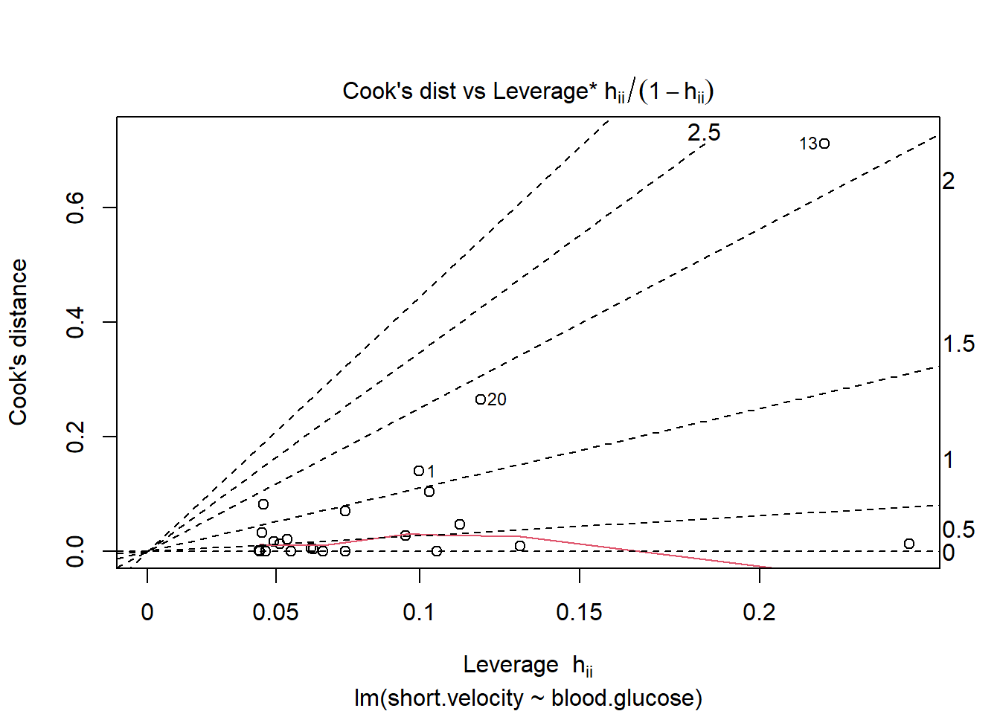

5 D&H Ch5 - Dichotomous Regressors: “Weight”
Darlington & Hayes, Chapter 5’s first example
# install.packages("remotes")
# remotes::install_github("sarbearschwartz/apaSupp")
# remotes::install_github("ddsjoberg/gtsummary")
library(tidyverse)
library(flextable)
library(apaSupp)
library(car)
library(rempsyc)
library(parameters)
library(performance)
library(interactions)
library(ggResidpanel)
library(olsrr)5.1 PURPOSE
RESEARCH QUESTION:
How is weight loss associationed with sex, after accounting for metabolism, exercise and food intake?
5.1.1 Data Description
Suppose you conducted a study examining the relationship between food consumption and weight loss among people enrolled (n = 10) in a month-long healthy living class.
5.1.1.1 Variables
Dependent Variable (DV)
lossaverage weight loss in hundreds of grams per week
Independent Variables (IVs)
exeraverage weekly hours of exercisedietaverage daily food consumption (in 100s of calories about the recommended minimum of 1,000 calories required to maintain good health)metametabolic ratesexdichotomous variable with 2 codes for Male and Female
Manually enter the data set provided on page 44 in Table 3.1
df_loss <- tibble::tribble(~id, ~exer, ~diet, ~meta, ~ sex, ~loss,
1, 0, 2, 15, 0, 6,
2, 0, 4, 14, 0, 2,
3, 0, 6, 19, 0, 4,
4, 2, 2, 15, 1, 8,
5, 2, 4, 21, 1, 9,
6, 2, 6, 23, 0, 8,
7, 2, 8, 21, 1, 5,
8, 4, 4, 22, 1, 11,
9, 4, 6, 24, 0, 13,
10, 4, 8, 26, 0, 9) %>%
dplyr::mutate(sex = factor(sex,
levels = c(0, 1),
labels = c("Male", "Female")))View the dataset
df_loss %>%
dplyr::select("ID" = id,
"Exercise\nFrequency" = exer,
"Food\nIntake" = diet,
"Metabolic\nRate" = meta,
"Sex" = sex,
"Weight\nLoss" = loss) %>%
flextable::flextable() %>%
apaSupp::theme_apa(caption = "Dataset on Exercise, Food Intake, and Weight Loss",
general_note = "Darlington and Hayes textbook, data set provided on page 44 in Table 3.1. Dependent variable is average weekly weight lost in 100s of grams. Exercise captures daily average of hours. Food intake is the average of 100's of calories above the recommendation.") %>%
flextable::colformat_double(digits = 0) ID | Exercise | Food | Metabolic | Sex | Weight |
|---|---|---|---|---|---|
1 | 0 | 2 | 15 | Male | 6 |
2 | 0 | 4 | 14 | Male | 2 |
3 | 0 | 6 | 19 | Male | 4 |
4 | 2 | 2 | 15 | Female | 8 |
5 | 2 | 4 | 21 | Female | 9 |
6 | 2 | 6 | 23 | Male | 8 |
7 | 2 | 8 | 21 | Female | 5 |
8 | 4 | 4 | 22 | Female | 11 |
9 | 4 | 6 | 24 | Male | 13 |
10 | 4 | 8 | 26 | Male | 9 |
Note. Darlington and Hayes textbook, data set provided on page 44 in Table 3.1. Dependent variable is average weekly weight lost in 100s of grams. Exercise captures daily average of hours. Food intake is the average of 100's of calories above the recommendation. | |||||
5.2 EXPLORATORY DATA ANALYSIS
5.2.1 Descriptive Statistics
5.2.1.1 Univariate
df_loss %>%
dplyr::select("Sex" = sex) %>%
apaSupp::tab_freq(caption = "Summary of Categorical Measures")Statistic | ||
|---|---|---|
Sex | ||
Male | 6 (60.0%) | |
Female | 4 (40.0%) | |
df_loss %>%
dplyr::select("Exercise Frequency" = exer,
"Food Intake" = diet,
"Metabolic Rate" = meta,
"Weight Loss" = loss) %>%
apaSupp::tab_desc(caption = "Summary for Continuous Measures") %>%
flextable::hline(i = 3)NA | M | SD | min | Q1 | Mdn | Q3 | max | |
|---|---|---|---|---|---|---|---|---|
Exercise Frequency | 0 | 2.00 | 1.63 | 0.00 | 0.50 | 2.00 | 3.50 | 4.00 |
Food Intake | 0 | 5.00 | 2.16 | 2.00 | 4.00 | 5.00 | 6.00 | 8.00 |
Metabolic Rate | 0 | 20.00 | 4.14 | 14.00 | 16.00 | 21.00 | 22.75 | 26.00 |
Weight Loss | 0 | 7.50 | 3.31 | 2.00 | 5.25 | 8.00 | 9.00 | 13.00 |
Note. N = 10. NA = not available or missing; Mdn = median; Q1 = 25th percentile; Q3 = 75th percentile. | ||||||||
df_loss %>%
dplyr::select(sex,
"Weight Loss" = loss,
"Exercise Frequency" = exer,
"Food Intake" = diet,
"Metabolic Rate" = meta) %>%
apaSupp::table1_apa(caption = "Descriptive of Continuous Measures by Sex",
split = sex) %>%
flextable::bg(i = 1:3, j = 3, bg = "lightblue") %>%
flextable::bg(i = 1:3, j = 4, bg = "lightpink")Total | Male | Female | p | ||
|---|---|---|---|---|---|
| n = 10 | n = 6 | n = 4 | ||
Weight Loss |
|
|
| .589 | |
| 7.50 (3.31) | 7.00 (3.90) | 8.25 (2.50) | ||
Exercise Frequency |
|
|
| .462 | |
| 2.00 (1.63) | 1.67 (1.97) | 2.50 (1.00) | ||
Food Intake |
|
|
| .581 | |
| 5.00 (2.16) | 5.33 (2.07) | 4.50 (2.52) | ||
Metabolic Rate |
|
|
| .887 | |
| 20.00 (4.14) | 20.17 (4.96) | 19.75 (3.20) | ||
Note. Continuous variables summarized by means (standard deviations) and are compared via independent ANOVA. | |||||
* p < .05. ** p < .01. *** p < .001. | |||||
5.2.1.2 Bivariate
Pearson’s correlation is only appropriate for TWO CONTINUOUS variables. The exception is when 1 variable is continuous and the other has exactly 2 levels. In this case, the binary variable needs to be converted to two numbers (numeric not factor) and the value is called the Point-Biserial Correlation (\(r_{pb}\)).
Table highlighting below:
-
YELLOW: un-adjusted correlation between each IV and the DV, at least some of them will usually be significant
-
ORANGE: pairwise correlations between each pair of IVs…if any are moderately strong, then we need to be concerned about potential multicolinearity and check the variance inflation factors (VIF).
df_loss %>%
dplyr::mutate(sex = as.numeric(sex == "Female")) %>%
dplyr::select("Weight Loss" = loss,
"Exercise Frequency" = exer,
"Food Intake" = diet,
"Metabolic Rate" = meta,
"Sex" = sex) %>%
apaSupp::tab_cor(caption = "Correlation Between Pairs of Measures",
general_note = "For pairs of variables with sex, r = Point-Biserial Correlation, otherwise ") %>%
flextable::hline(i = 4) %>%
flextable::bg(i = 1:4, bg = "yellow") %>%
flextable::bg(i = c(6, 8), bg = "orange") %>%
flextable::bold(i = c(4, 7, 9, 10))Variable Pair | r | p | |
|---|---|---|---|
Exercise Frequency | Weight Loss | .860 | .001** |
Food Intake | Weight Loss | .047 | .898 |
Metabolic Rate | Weight Loss | .650 | .042* |
Sex | Weight Loss | .200 | .589 |
Food Intake | Exercise Frequency | .380 | .282 |
Metabolic Rate | Exercise Frequency | .790 | .007** |
Sex | Exercise Frequency | .260 | .462 |
Metabolic Rate | Food Intake | .750 | .013* |
Sex | Food Intake | < .001 | .581 |
Sex | Metabolic Rate | < .001 | .887 |
Note. N = 10. r = Pearson's Product-Moment correlation coefficient.For pairs of variables with sex, r = Point-Biserial Correlation, otherwise | |||
* p < .05. ** p < .01. *** p < .001. | |||
5.2.2 Visualizing Distributions
5.2.2.1 Univariate
df_loss %>%
dplyr::mutate(sex = as.numeric(sex)) %>%
dplyr::select(id,
"Sex" = sex,
"Weight Loss\n(100 g/day)" = loss,
"Exercise Frequency\n(hr/day)" = exer,
"Food Intake\n(100 cal/day above 1000)" = diet,
"Metabolic Rate" = meta) %>%
tidyr::pivot_longer(cols = -id) %>%
ggplot(aes(value)) +
geom_histogram(binwidth = 1,
color = "black",
alpha = .25) +
theme_bw() +
facet_wrap(~ name,
scale = "free_x") +
labs(x = NULL,
y = "Count")
Figure 5.1
Univariate Distibution of Measures

5.2.2.2 Bivariate
df_loss %>%
dplyr::mutate(sex = as.numeric(sex == "Female")) %>%
ggplot(aes(x = sex,
y = loss)) +
geom_point(size = 3) +
geom_smooth(method = "lm",
formula = y ~ x) +
geom_hline(yintercept = mean(df_loss$loss),
linetype = "longdash") +
stat_summary(geom = "point",
fun = "mean",
color = "red",
fill = "red",
alpha = .2,
shape = 23,
size = 9) +
theme_bw() +
scale_x_continuous(breaks = 0:1) +
labs(x = "Sex, recoded as 0 = Male and 1 = Female",
y = "Observed Weight Loss, 100s of grams/week")
Figure 5.2
Scatterplot for Weight Loss Regressed on Sex
df_loss %>%
ggplot(aes(x = sex,
y = loss)) +
geom_boxplot(fill = "gray") +
stat_summary(geom = "point",
fun = "mean",
color = "red",
shape = 18,
size = 9) +
theme_bw() +
labs(x = NULL,
y = "Observed Weight Loss\nWeekly average of 100s of grams/week")
Figure 5.3
Boxplot for Weight Loss Distribution by Sex

5.3 GROUP MEAN DIFFERENCE
5.3.1 Assess Homogeneity of Variance
When conducting an independent group mean difference t-test …
IF: * evidence that HOV is violated (Levene’s p < .05)
THEN: * use Welch’s adjustment to degrees of freedom and perform a seperate variance t-test instead of a standard pool-variance t-test.
# A tibble: 2 × 3
Df `F value` `Pr(>F)`
<int> <dbl> <dbl>
1 1 1.05 0.335
2 8 NA NA The un-adjusted MEAN DIFFERENCE in weight loss by gender may be tested with a t-test
Two Sample t-test
data: loss by sex
t = -0.56269, df = 8, p-value = 0.5891
alternative hypothesis: true difference in means between group Male and group Female is not equal to 0
95 percent confidence interval:
-6.372702 3.872702
sample estimates:
mean in group Male mean in group Female
7.00 8.25
Pearson's product-moment correlation
data: loss and as.numeric(sex)
t = 0.56269, df = 8, p-value = 0.5891
alternative hypothesis: true correlation is not equal to 0
95 percent confidence interval:
-0.4953645 0.7345089
sample estimates:
cor
0.1951181 [1] 0.038071075.4 REGRESSION ANALYSIS
This data was previously analyzed by regressing weight loss on the main effects of the continuous independent measures (See D & H Ch2 a).
5.4.1 Binary Predictor (IV)
5.4.1.1 Unadjusted Model
Call:
lm(formula = loss ~ sex, data = df_loss)
Residuals:
Min 1Q Median 3Q Max
-5.00 -2.50 0.25 1.75 6.00
Coefficients:
Estimate Std. Error t value Pr(>|t|)
(Intercept) 7.000 1.405 4.982 0.00108 **
sexFemale 1.250 2.221 0.563 0.58906
---
Signif. codes: 0 '***' 0.001 '**' 0.01 '*' 0.05 '.' 0.1 ' ' 1
Residual standard error: 3.441 on 8 degrees of freedom
Multiple R-squared: 0.03807, Adjusted R-squared: -0.08217
F-statistic: 0.3166 on 1 and 8 DF, p-value: 0.58915.4.1.2 Adjusted Model
Call:
lm(formula = loss ~ exer + diet + meta + sex, data = df_loss)
Residuals:
1 2 3 4 5 6 7 8
0.238856 -0.894870 0.373423 0.340622 0.009251 -0.327166 0.542473 -0.892347
9 10
1.771236 -1.161480
Coefficients:
Estimate Std. Error t value Pr(>|t|)
(Intercept) -0.9672 3.4552 -0.280 0.7907
exer 1.1510 0.5066 2.272 0.0723 .
diet -1.1333 0.3156 -3.591 0.0157 *
meta 0.5997 0.2608 2.299 0.0699 .
sexFemale -0.4037 0.8687 -0.465 0.6617
---
Signif. codes: 0 '***' 0.001 '**' 0.01 '*' 0.05 '.' 0.1 ' ' 1
Residual standard error: 1.166 on 5 degrees of freedom
Multiple R-squared: 0.931, Adjusted R-squared: 0.8758
F-statistic: 16.86 on 4 and 5 DF, p-value: 0.004163apaSupp::tab_lms(list("Unadjusted" = fit_loss_sex,
"Adjusted" = fit_loss_wsex),
var_labels = c("exer" = "Exercise Freq",
"diet" = "Food Intake",
"meta" = "Metabolic Rate",
"sex" = "Sex"),
caption = "Compare Unadjusted and Adjusted Models") %>%
flextable::bg(i = 2:4, bg = "yellow")
| Unadjusted | Adjusted | ||||
|---|---|---|---|---|---|---|
Variable | b | (SE) | p | b | (SE) | p |
(Intercept) | 7.00 | (1.40) | .001** | -0.97 | (3.46) | .791 |
Sex | ||||||
Male | — | — | — | — | ||
Female | 1.2 | (2.22) | .589 | < .0 | (0.87) | .662 |
Exercise Freq | 1.15 | (0.51) | .072 | |||
Food Intake | -1.13 | (0.32) | .016* | |||
Metabolic Rate | 0.60 | (0.26) | .070 | |||
AIC | 56.9 | 36.5 | ||||
BIC | 57.8 | 38.3 | ||||
R² | .038 | .931 | ||||
Adjusted R² | < .001 | .876 | ||||
Note. | ||||||
* p < .05. ** p < .01. *** p < .001. | ||||||
apaSupp::tab_lm(fit_loss_wsex,
fit = c("r.squared", "adj.r.squared",
"statistic", "df", "df.residual", "p.value"),
var_labels = c("exer" = "Exercise Freq",
"diet" = "Food Intake",
"meta" = "Metabolic Rate",
"sex" = "Female vs Male"),
caption = "Parameter Estimtates for Weight Loss Regressed Exercise Frequency, Food Intake, and Sex",
show_single_row = "sex",
d = 3) %>%
flextable::bg(i = 5, bg = "yellow")b | (SE) | p | b* | η² | ηₚ² | |
|---|---|---|---|---|---|---|
(Intercept) | -0.967 | (3.455) | .7907 | |||
Exercise Freq | 1.151 | (0.507) | .0723 | 0.568 | .0712 | .5079 |
Food Intake | -1.133 | (0.316) | .0157* | -0.740 | .1780 | .7206 |
Metabolic Rate | 0.600 | (0.261) | .0699 | 0.750 | .0730 | .5139 |
Female vs Male | -0.404 | (0.869) | .6617 | .0030 | .0414 | |
R² | .9310 | |||||
Adjusted R² | .8758 | |||||
Statistic | 16.86 | |||||
df | 4.00 | |||||
Residual df | 5.0000 | |||||
p-value | .00 | |||||
Note. N = 10. η² = semi-partial correlation; ηₚ² = partial correlation; b* = standardize coefficient; p = significance from Wald t-test for parameter estimate. | ||||||
* p < .05. ** p < .01. *** p < .001. | ||||||
Estimated Regression Coefficients show RELATIONSHIPS
- Continuous IV: slope, rise per run
- Categorical IV: difference in group means
INTERPRETATION:
After adjusting or correcting for difference in exercise frequency, food intake, and metobalic rate, females lost nearly 404 g/wk less on average than their male counterparts although this was not a statistically significant difference, b = -0.40, SE = 0.87, p = .662.
5.4.2 Model to Visualize
5.4.2.1 Fit Model
Call:
lm(formula = loss ~ exer + diet + sex, data = df_loss)
Residuals:
Min 1Q Median 3Q Max
-2.2353 -0.7101 0.2269 0.8698 1.5210
Coefficients:
Estimate Std. Error t value Pr(>|t|)
(Intercept) 6.5714 1.4264 4.607 0.00366 **
exer 2.1261 0.3628 5.860 0.00109 **
diet -0.5840 0.2700 -2.163 0.07376 .
sexFemale -1.0084 1.0840 -0.930 0.38813
---
Signif. codes: 0 '***' 0.001 '**' 0.01 '*' 0.05 '.' 0.1 ' ' 1
Residual standard error: 1.527 on 6 degrees of freedom
Multiple R-squared: 0.858, Adjusted R-squared: 0.7871
F-statistic: 12.09 on 3 and 6 DF, p-value: 0.0059155.4.2.2 Equations
General Equation:
\[ \widehat{loss} = 6.571 + 2.127(exer) - 0.584(diet) - 1.008(sex) \]
Equation for MALES:
\[ \widehat{loss} = 6.571 + 2.127(exer) - 0.584(diet) - 1.008(0) \\ \widehat{loss} = 6.571 + 2.127(exer) - 0.584(diet) - 0\\ \widehat{loss} = 6.571 + 2.127(exer) - 0.584(diet) \]
Equation for FEAMLES:
\[ \widehat{loss} = 6.571 + 2.127(exer) - 0.584(diet) - 1.008(1) \\ \widehat{loss} = 6.571 + 2.127(exer) - 0.584(diet) - 1.008 \\ \widehat{loss} = 5.563 + 2.127(exer) - 0.584(diet) \]

5.4.2.4 2D Plots
There is always more than one way to arrange a plot when there are TWO OR MORE predictors (IVs).
interactions::interact_plot(model = fit_loss_plot,
pred = exer,
modx = sex,
mod2 = diet,
mod2.values = c(2, 8),
mod2.labels = c("1200 Calories/day",
"1800 Calories/day"),
interval = TRUE,
legend.main = "Sex",
x.label = "Exercise, hr/wk",
y.label = "Estimated Marginal Mean\nWeight Loss, 100g/wk") +
theme_bw() +
theme(legend.position = "inside",
legend.position.inside = c(0, 1),
legend.justification = c(-0.1, 1.1),
legend.background = element_rect(color = "black"),
legend.key.width = unit(1.5, "cm"))
Figure 5.5
Option A
interactions::interact_plot(model = fit_loss_plot,
pred = diet,
modx = sex,
mod2 = exer,
mod2.values = c(0, 2, 4),
mod2.labels = c("Exercise = 0 hr/wk",
"Exercise = 2 hr/wk",
"Exercise = 4 hr/wk"),
interval = TRUE,
legend.main = "Sex",
x.label = "Food Intake, cal/day",
y.label = "Estimated Marginal Mean\nWeight Loss, 100g/wk") +
theme_bw() +
scale_x_continuous(breaks = c(2, 4, 6, 8),
labels = c(1200, 1400, 1600, 1800)) +
theme(legend.position = "inside",
legend.position.inside = c(0, 1),
legend.justification = c(-0.1, 1.1),
legend.background = element_rect(color = "black"),
legend.key.width = unit(1.5, "cm"))
Figure 5.6
Option B
interactions::interact_plot(model = fit_loss_plot,
pred = diet,
modx = exer,
modx.values = c(0, 2, 4),
modx.labels = c("0 hr/wk",
"2 hr/wk",
"4 hr/wk"),
mod2 = sex,
mod2.labels = c("Male", "Female"),
interval = TRUE,
legend.main = "Exercise",
x.label = "Food Intake, cal/day",
y.label = "Estimated Marginal Mean\nWeight Loss, 100g/wk") +
theme_bw() +
scale_x_continuous(breaks = c(2, 4, 6, 8),
labels = c(1200, 1400, 1600, 1800)) +
theme(legend.position = "inside",
legend.position.inside = c(1, 1),
legend.justification = c(1.1, 1.1),
legend.background = element_rect(color = "black"),
legend.key.width = unit(1.5, "cm"))
Figure 5.7
Option C
5.5 MULTIDIMENSIONAL SETS
5.5.1 Fit Models
Divide the predictors (IVs) into two sets as folows:
“Set A” (
metaandsex) demographic or biological,hard to change“Set B” (
exeranddiet) modifiable behavioral, can be targeted
5.5.2 Table of Parameter Estimates
apaSupp::tab_lms(list("Set A" = fit_loss_setA,
"Set B" = fit_loss_setB,
"A & B" = fit_loss_all4),
var_labels = c("exer" = "Exercise Freq",
"diet" = "Food Intake",
"meta" = "Metabolic Rate",
"sex" = "Sex"),
caption = "Compare Model Parameter Estimates") %>%
flextable::bg(i = 2:5, bg = "lightgreen") %>%
flextable::bg(i = 6:7, bg = "violet")
| Set A | Set B | A & B | ||||||
|---|---|---|---|---|---|---|---|---|---|
Variable | b | (SE) | p | b | (SE) | p | b | (SE) | p |
(Intercept) | -3.67 | (4.56) | .448 | 6.00 | (1.27) | .002** | -0.97 | (3.46) | .791 |
Metabolic Rate | 0.53 | (0.22) | .047* | 0.60 | (0.26) | .070 | |||
Sex | |||||||||
Male | — | — | — | — | |||||
Female | 1.5 | (1.76) | .430 | < .0 | (0.87) | .662 | |||
Exercise Freq | 2.00 | (0.33) | < .001*** | 1.15 | (0.51) | .072 | |||
Food Intake | -0.50 | (0.25) | .088 | -1.13 | (0.32) | .016* | |||
AIC | 52.8 | 41.1 | 36.5 | ||||||
BIC | 54.0 | 42.3 | 38.3 | ||||||
R² | .474 | .838 | .931 | ||||||
Adjusted R² | .324 | .791 | .876 | ||||||
Note. | |||||||||
* p < .05. ** p < .01. *** p < .001. | |||||||||
5.5.3 Compare Fit Statistics
apaSupp::tab_lm_fits(list("None" = fit_loss_none,
"Set A" = fit_loss_setA,
"Set B" = fit_loss_setB,
"A & B" = fit_loss_all4),
caption = "Compare Models Fit Measures")
| |||||||
|---|---|---|---|---|---|---|---|
Model | N | k | mult | adj | AIC | BIC | RMSE |
None | 10 | 1 | < .001 | < .001 | 55.25 | 55.86 | 3.14 |
Set A | 10 | 3 | .474 | .324 | 52.82 | 54.03 | 2.28 |
Set B | 10 | 3 | .838 | .791 | 41.08 | 42.29 | 1.26 |
A & B | 10 | 5 | .931 | .876 | 36.52 | 38.33 | 0.82 |
Note. k = number of parameters estimated in each model. Larger values indicated better performance. Smaller values indicated better performance for Akaike's Information Criteria (AIC), Bayesian information criteria (BIC), and Root Mean Squared Error (RMSE). | |||||||
5.5.4 Multicolinearity Checks
Refer back to the pairwise correlations in the exploratory data anlaysis section above
meta sex
1.002713 1.002713 exer diet
1.166667 1.166667 meta sex exer diet
7.706476 1.332212 4.531259 3.077096 Most multivariate statistical approaches involve decomposing a correlation matrix into linear combinations of variables. The linear combinations are chosen so that the first combination has the largest possible variance (subject to some restrictions we won’t discuss), the second combination has the next largest variance, subject to being uncorrelated with the first, the third has the largest possible variance, subject to being uncorrelated with the first and second, and so forth. The variance of each of these linear combinations is called an eigenvalue. Collinearity is spotted by finding 2 or more variables that have large proportions of variance (.50 or more) that correspond to large condition indices. A rule of thumb is to label as large those condition indices in the range of 30 or larger.
Tolerance and Variance Inflation Factor
---------------------------------------
Variables Tolerance VIF
1 meta 0.1297610 7.706476
2 sexFemale 0.7506313 1.332212
3 exer 0.2206892 4.531259
4 diet 0.3249818 3.077096
Eigenvalue and Condition Index
------------------------------
Eigenvalue Condition Index intercept meta sexFemale exer
1 4.135512700 1.000000 0.0006160027 0.0002724501 0.01387363 3.978915e-03
2 0.565206086 2.704963 0.0004350066 0.0003493460 0.65741826 6.450569e-07
3 0.233631940 4.207252 0.0088906847 0.0003131313 0.04430496 2.676271e-01
4 0.062413815 8.139998 0.0559920430 0.0030556071 0.17162000 2.400058e-02
5 0.003235459 35.751703 0.9340662631 0.9960094655 0.11278315 7.043928e-01
diet
1 0.002439753
2 0.009289727
3 0.004776515
4 0.458034251
5 0.5254597545.5.5 Residual Diagnostics
Interpretation:
rempsyc::nice_assumption()
p-values < .05 imply assumptions are not respected.
Diagnostic is how many assumptions are not respected for a
given model or variable.
Model
"loss ~ meta + sex + exer + diet"
Normality (Shapiro-Wilk)
"0.475"
Homoscedasticity (Breusch-Pagan)
"0.122"
Autocorrelation of residuals (Durbin-Watson)
"0.987"
Diagnostic.BP
"0" OK: Simulated residuals appear as uniformly distributed (p = 0.728).
5.6 EFFECT of VARIABLE SET
Unique Contribution: amount \(R^2\) would drop if the regressor(s) were removed from the analysis.
ss_lm <- function(model){
ss_tot = data.frame(anova(model))$Sum.Sq[model$rank]
ss_reg = sum(data.frame(anova(model))$Sum.Sq[-model$rank])
ss_err = deviance(model)
r_sqr = summary(model)$r.squared
r_adj = summary(model)$adj.r.squared
return(list(R2_Unadjusted = r_sqr,
R2_Adjusted = r_adj,
SS_Total = ss_tot,
SS_Regression = ss_reg,
SS_Error = ss_err))
}data.frame(Variables = c("None", "Set A", "Set B", "A & B")) %>%
dplyr::mutate(model = list(fit_loss_none,
fit_loss_setA,
fit_loss_setB,
fit_loss_all4)) %>%
dplyr::mutate(values = purrr::map_df(model, ss_lm)) %>%
dplyr::select(-model) %>%
tidyr::unnest(cols = values) %>%
flextable::flextable() %>%
flextable::separate_header() %>%
apaSupp::theme_apa(caption = "Contribution of Variables Sets A and B") %>%
flextable::border_inner(part = "header", border = officer::fp_border(width = 0)) %>%
flextable::align(part = "body", j = c(2, 4, 5), align = "right")%>%
flextable::align(part = "body", j = c(3, 6), align = "left")Variables | R2 | SS | |||
|---|---|---|---|---|---|
Unadjusted | Adjusted | Total | Regression | Error | |
None | 0.00 | 0.00 | 98.50 | 0.00 | 98.50 |
Set A | 0.47 | 0.32 | 51.77 | 46.73 | 51.77 |
Set B | 0.84 | 0.79 | 16.00 | 82.50 | 16.00 |
A & B | 0.93 | 0.88 | 6.80 | 91.70 | 6.80 |
5.6.0.1 Set B’s Unique Contriburion
Semipartial Multiple Correlation, \(SR(B \vert A)\)
UNIQUE contribution of set B, relative to ALL the variance in the Dependent Variable (DV)
Correlation between the Dependent Variable (DV) AND set B, with all the the variables in set A held constant.
How much \(R^2\) increase when the variables in set B are added to a model of Y already including set A variables as regressors.
\[ SR(B \vert A)^2 = R(AB)^2 - R(A)^2 \\ \]
[1] 0.4565391Partial multiple correlation, \(PR(B \vert A)\)
Proportion of remaining variables explained by set B
UNIQUE contribution of set B, relative to the REMAINING variance in the Dependent Variable (DV) unaccounted for by set A
\[ PR(B \vert A)^2 = \frac{SR(B \vert A)^2}{1 - R(A)^2} \]
(summary(fit_loss_all4)$r.squared - summary(fit_loss_setA)$r.squared) /
(1 - summary(fit_loss_setA)$r.squared)[1] 0.8686927INTERPRETATION:
Of these four factors, the onse most under a person’s control (food intake and exercise) uniquely explain about 45.7% of the varaince in weight loss, holding constant the ones less under personal control (sex and metabolism).
We can also say the factors more under personal control explain about 86.9% of the variance in weight loss that remains after accounting for the factors less under control.
5.6.2 Significance of Set B’s Contribution
# A tibble: 3 × 6
Res.Df RSS Df `Sum of Sq` F `Pr(>F)`
<dbl> <dbl> <dbl> <dbl> <dbl> <dbl>
1 9 98.5 NA NA NA NA
2 7 51.8 2 46.7 17.2 0.00575
3 5 6.80 2 45.0 16.5 0.00625INTERPRETATION:
After controlling for biological factors of metabolism and sex, F(2, 7) = 17.19, p = .005, the modifiable factors of exercise and food intake significantly impart weight loss, F(2, 5) = 16.54, p = .006.
5.6.3 Standardized Regression Coefficients
Standardized regression coefficients for CATEGORICAL predictors (IVs) is DISCOURAGED!
# A tibble: 3 × 5
Parameter Std_Coefficient CI CI_low CI_high
<chr> <dbl> <dbl> <dbl> <dbl>
1 (Intercept) 8.24e-17 0.95 -0.342 0.342
2 exer 9.87e- 1 0.95 0.598 1.38
3 diet -3.26e- 1 0.95 -0.716 0.0626# A tibble: 5 × 5
Parameter Std_Coefficient CI CI_low CI_high
<chr> <dbl> <dbl> <dbl> <dbl>
1 (Intercept) 0.0488 0.95 -0.345 0.442
2 meta 0.750 0.95 -0.0885 1.59
3 sexFemale -0.122 0.95 -0.797 0.553
4 exer 0.568 0.95 -0.0747 1.21
5 diet -0.740 0.95 -1.27 -0.210